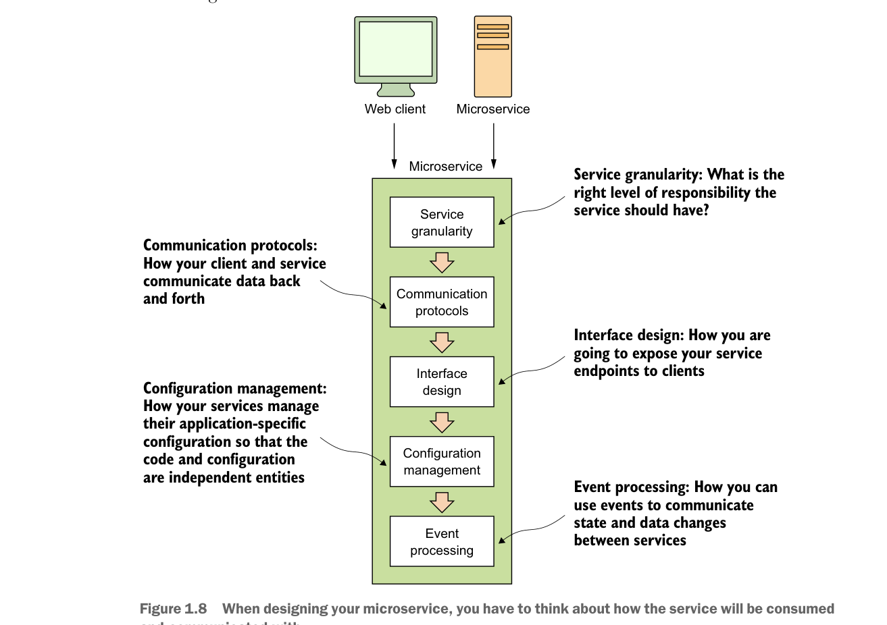

triển khai công nghệ. Mặc dù chúng tôi đã chọn sử dụng Spring Boot và Spring Cloud để triển khai các mẫu mà chúng tôi sẽ sử dụng trong cuốn sách này, nhưng không có gì ngăn cản bạn lấy các khái niệm được trình bày ở đây và sử dụng chúng với các nền tảng công nghệ khác. Cụ thể, chúng tôi đề cập đến sáu loại mẫu microservice sau:
- Các mẫu phát triển cốt lõi
- Các mẫu định tuyến
- Các mẫu khả năng phục hồi của máy khách
- Các mẫu bảo mật
- Các mẫu ghi nhật ký và theo dõi
- Các mẫu xây dựng và triển khai
Hãy cùng tìm hiểu chi tiết hơn về các mẫu này.
1.9.1 Mẫu phát triển microservice cốt lõi
Mẫu phát triển microservice cốt lõi đề cập đến những điều cơ bản khi xây dựng một microservice. Hình 1.8 làm nổi bật các chủ đề chúng ta sẽ đề cập xung quanh thiết kế dịch vụ cơ bản.

Khi thiết kế microservice của bạn, bạn phải suy nghĩ về cách dịch vụ sẽ được tiêu thụ và giao tiếp.